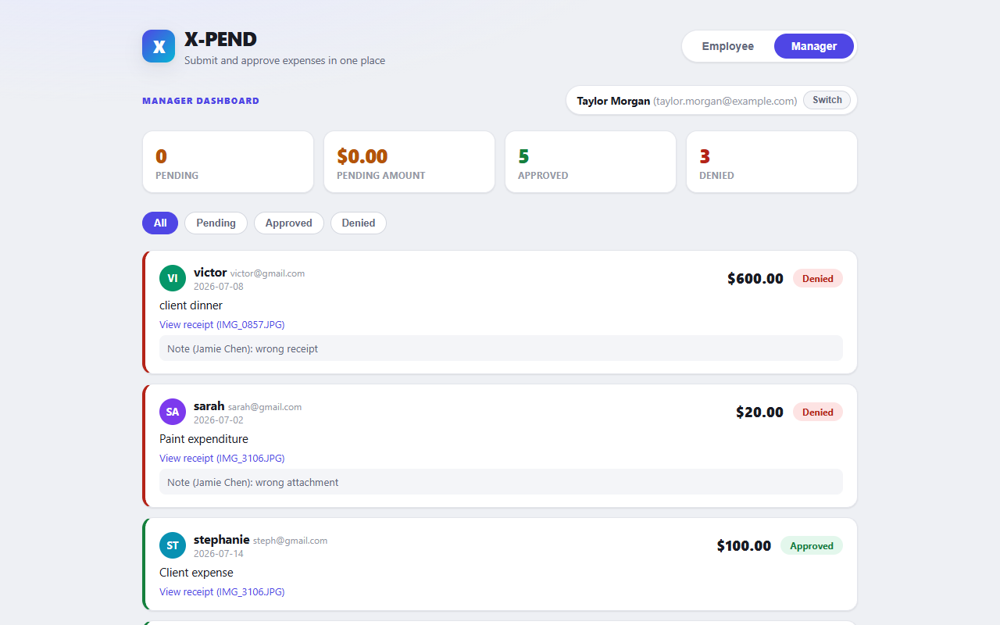
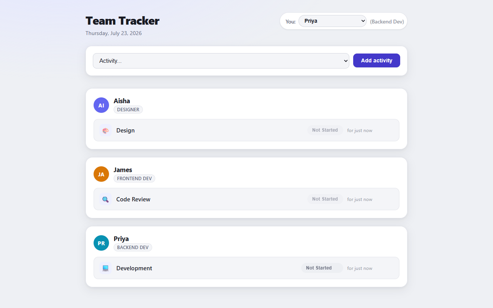

Focus areas
Three kinds of product work, all shipped and working.
AI & LLM Products
Integrating language models into real product surfaces — cost-aware, cached, and debugged in production.
↗Workflow Automation
Approval workflows built and rebuilt through real user feedback, not one-shot guesses.
↗Internal Tools
Low-friction tooling scoped tightly to the team size and problem it actually serves.
↗How I Build
Scope the real problem → make the call → ship it → verify it works → iterate on feedback. Every case study below follows this loop.
✓Case studies
Real screenshots, real decisions, real outcomes.
Baseball Stats + AI Player Bios
Self-seeding data product with sortable, editable stats and on-demand LLM-generated player bios — including a real production-style incident diagnosed and fixed live.

X-PEND — Expense Approval Workflow
Employees submit, managers approve. Rebuilt three times, each round triggered by a specific piece of real feedback — not a redesign for its own sake.

Team Tracker
A daily status tracker giving a team visibility into what everyone is working on, with a deliberately low-friction identity model — no accounts, no passwords.